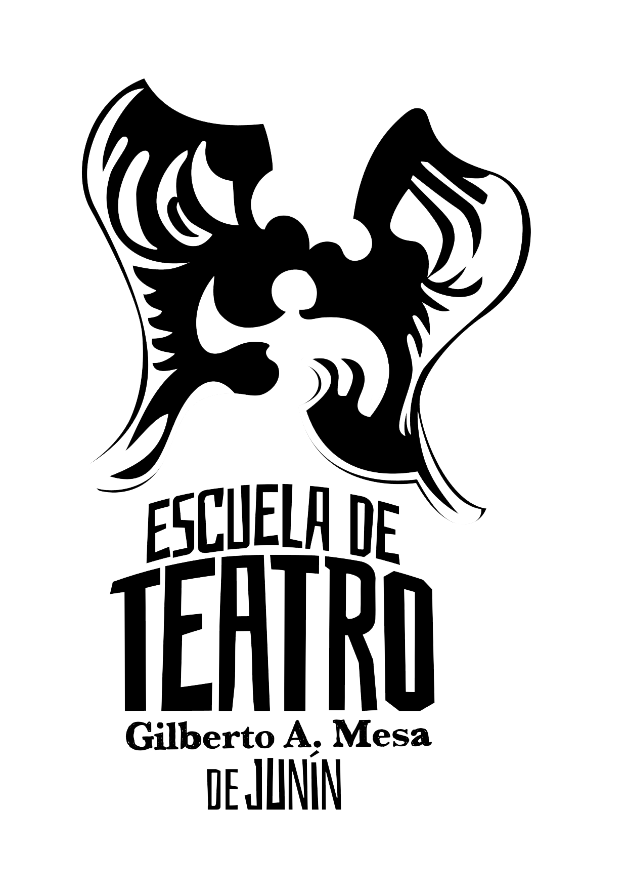

En este Año de los Derechos Humanos por la Memoria, la Verdad y la Justicia, a cincuenta años de la última dictadura cívico militar, nuestra escuela celebra una nueva Muestra Anual. Conmemoramos a quien nos da nombre, Gilberto "Beto" Mesa, actor, titiritero, bailarín, trabajador ferroviario y militante cultural juninense desaparecido el 17 de diciembre de 1976.
A lo largo de esta noche, antes de cada propuesta artística, recorreremos su vida a través de pequeños fragmentos de su historia. Cada cápsula será un alto en el camino, un momento para recordar al hombre que fue, al artista que hizo y al compañero que seguimos extrañando. Un hilo de memoria que atravesará la noche, acompañando las creaciones que nuestras estudiantes y estudiantes van a compartir con ustedes.
Porque esta noche, en este escenario, conviven muchas formas de hacer arte: el teatro, la danza, la composición, el movimiento. Y cada una de ellas es un acto de amor, de arte y de memoria. Un acto que le rinde homenaje a Beto, que sigue vivo en cada función, en cada cuerpo que sube a escena.
— Equipo de Conducción Institucional
Artista multifacético y trabajador ferroviario nacido en Junín el 11 de septiembre de 1931. Transitó la actuación, los títeres, la dramaturgia, la danza folklórica, la escenografía, la poesía y la radio. Para Beto, el arte era un medio cotidiano para transmitir valores democráticos, solidaridad y respeto.
A los dieciocho años se sumó al Grupo de Teatro Francisco Russo. Hacia 1950 consolidó su camino en el Teatro La Antorcha, bajo la dirección de Héctor López, con obras de fuerte impronta social como Barro Humano y Las lágrimas también se secan.
En la década del cincuenta alcanzó una de sus cumbres con la tragicomedia de Pedro Bloch, dirigida por Héctor López. A través de la expresividad de sus manos y una mirada penetrante, rompía la cuarta pared e interrogaba al público.
En 1955 nació Payasín. Junto a Elsa (Plumita) y Atilio (Pelusa) fundaron el Teatro Disney en Villa Belgrano, donde estrenaban obras escritas y dirigidas por el propio Beto, varias inscriptas en Argentores.
En 1957 cobró vida un teatrillo artesanal que se plegaba como valija. Su esposa Lina cosía los vestuarios y su hija Adriana manejaba la música. Pinocho, Rosita y Pepe el Grillo recorrían plazas, escuelas y festivales.
Se graduó como profesor de folklore, escribió dramaturgias y se integró al Ballet Terpsícore como mimo y arlequín. Fue el gran artífice visual de montajes emblemáticos como La leyenda del cacuy.
En 1966 participó de la fundación de la COART, que reunió a más del noventa por ciento de los artistas locales. Desde ese colectivo impulsó la creación del emblemático Teatro de la Ranchería, sala que esta noche nos recibe. También condujo en Radio Junín Los duendes de los chicos y La Peña de Don Zoilo.
La madrugada del 17 de diciembre de 1976, un operativo ilegal irrumpió en su casa de la calle Río Negro. A sus 45 años, Beto fue secuestrado en presencia de su familia y desaparecido forzosamente. Fue uno de los más de treinta juninenses víctimas del terrorismo de Estado.
Este recorrido recupera la investigación realizada en 2023 en nuestra escuela, desde la cátedra de Metodología de la Investigación en Artes a cargo de la profesora Silvina Hortal. Como expresó su hija Adriana: "la dictadura privó a la sociedad de su presencia física, pero uno no está donde yace su cuerpo, sino donde se lo recuerda con afecto".
A cada estudiante que esta noche subió a escena,
dejando su cuerpo, su voz y su emoción en las tablas.
A los docentes, que con su guía y pasión
mantienen viva la llama del teatro y la danza en nuestra escuela.
Al equipo técnico,
y a cada uno de los que hace posible
que el Teatro de la Ranchería siga latiendo.
Y a ustedes, el público, por acompañarnos,
por escuchar, por cada caluroso aplauso. ¡Gracias!